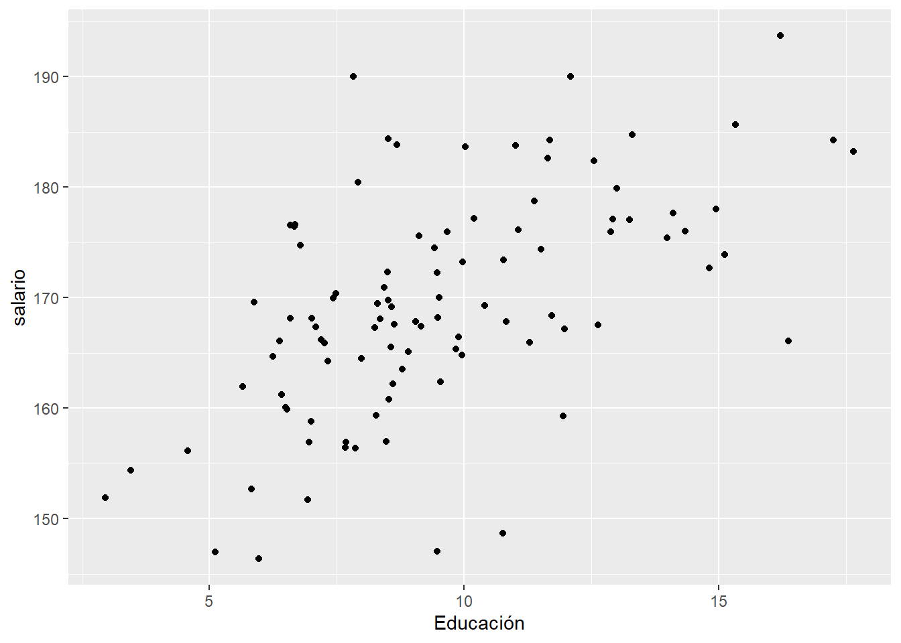
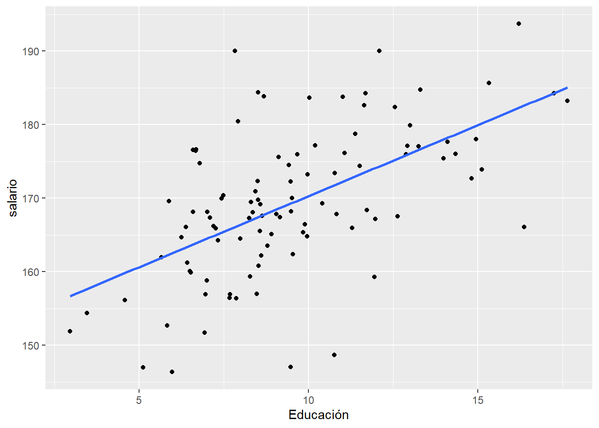
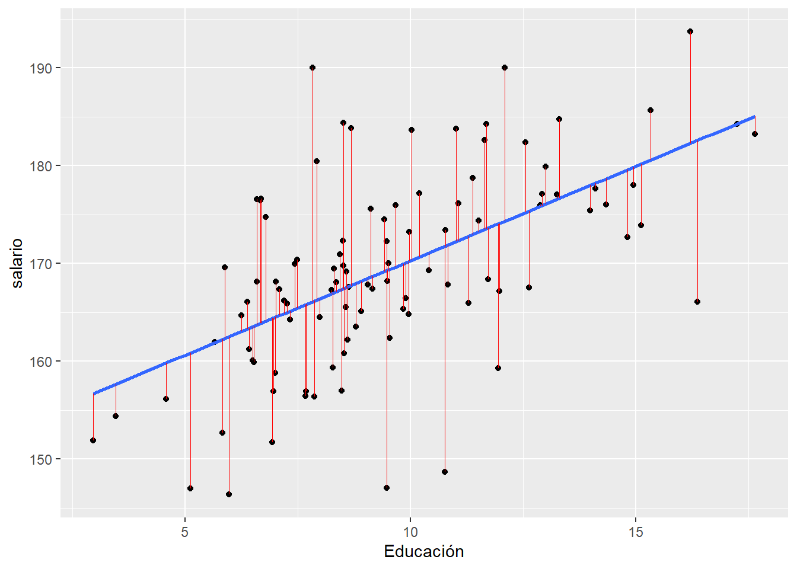

#Fijo una semilla
set.seed(1234)
#Genero el vector de educación y una perturbación normal
educacion <- rnorm(100,10,3)
e <- rnorm(100,0,8)
#Genero el salario con parámetros conocidos (b0=100, b1=2)
b0 <- 150
b1 <- 2
salario <- b0 + b1 * educacion + e
datos.salarios <- as.data.frame(cbind(salario, educacion))Revisión del modelo lineal con muestras finitas
class: title-slide
.title[ # Revisión del modelo lineal con muestras finitas]
.subtitle[ ## Taller de Econometría CIESTAAM-UACh 2022]
.author[ ### Irvin Rojas
rojasirvin.com
]
Agenda
Haremos un recordatorio de lo que ya saben sobre MCO
Usaremos R para repasar la intución detrás de una regresión lineal
Recordaremos los supuestos que nos permiten derivar propiedades deseables del estimador de MCO
Reflexionaremos sobre lo restrictivo de estas propiedades
Ilustración geométrica
Existe una relación positiva entre los años de educación y el salario
Este problema en economía es un problema de retornos a la educación
Quisiéramos saber cómo cambia el ingreso cuando tenemos un año más de educación
Más adelante trabajaremos con datos reales, pero ahora comenzaremos con una simulación
En una simulación generamos datos a partir de un proceso generador de datos conocido
Voy a construir una variable de salarios y una de educación con unos parámetros conocidos y les voy a añadir una perturbación aleatoria
Específicamente, generaré 100 realizaciones de
\[w_i=\alpha+\beta educ_i+e_i\]
con \(\alpha=150\), \(\beta=2\) y \(e_i\sim\mathcal{N}(0,64)\)
Simulación educación y salario
.pull-left[
Fijamos una semilla para poder replicar la simulación
Construimos los datos generando un vector de educación y una perturbación aleatoria
]
.pull-right[
#Estimamos una regresión lineal usando lm
(lm(salario ~ educacion))
Call:
lm(formula = salario ~ educacion)
Coefficients:
(Intercept) educacion
150.99 1.93 ]
Representación gráfica
.pull-left[ Podemos representar la relación entre salario y educación en el plano
Aquí usamos ggplot
Noten que unimos instrucciones usando el símbolo +
datos.salarios %>%
ggplot(aes(x=educacion, y=salario )) +
geom_point()+
labs(x="Educación", "Salario por hora")]
.pull-right[

]
El principio de mínimos cuadrados
.pull-left[ Existe una infinidad de líneas que puedo trazar intentando describir los puntos
Cada línea está caracterizada por una ordenada al origen y una pendiente
\[\hat{y}=\alpha+\beta X\]
Esta recta describe el salario que esperaríamos dado un nivel de educación
A la diferencia entre lo observado y lo ajustado le llamamos errores
\[\hat{e}=y-\hat{y}\]
]
.pull-right[
]
El principio de mínimos cuadrados
.pull-left[ Yo puedo acumular el total de los errores, sumando simplemente \(\sum_i \hat{e}_i\) para expresar una medida de discrepancia entre mi recta y los puntos observados
Pero también me gustaría hacer que los errores más grandes pesen más que los más errores más pequeños
\[L=\sum_i \hat{e}_i^2\]
Sustituyendo lo que vale \(\hat{e}\) y \(\hat{y}\)
\[L=\sum_i \hat{e}_i^2=\sum_i (y_i-\hat{y}_i)^2=\sum_i (y_i-\alpha-\beta X_i)^2\] ]
.pull-right[

]
El principio de mínimos cuadrados
.pull-left[ El principio de MCO consiste en elegir el valor de \(\alpha\) y \(\beta\) que hagan \(L\) lo más pequeño posible
En otras palabras, escogemos \(\alpha\) y \(\beta\) que minimicen la suma de los errores que cometemos al ajustar la recta a los puntos, penalizando los errores más grandes
A los valores de \(\alpha\) y \(\beta\) que minimizan la suma de los errores cuadráticos les conocemos como estimadores de MCO
Los parámetros de la recta que cumplen con minimizar la suma de los errores cuadráticos pueden son estimados usando lm ]
.pull-right[
reg1 <- lm(salario ~ educacion,
data=datos.salarios)
summary(reg1)
Call:
lm(formula = salario ~ educacion, data = datos.salarios)
Residuals:
Min 1Q Median 3Q Max
-23.0900 -4.9121 0.0189 4.6916 23.9019
Coefficients:
Estimate Std. Error t value Pr(>|t|)
(Intercept) 150.9928 2.7646 54.616 < 2e-16 ***
educacion 1.9304 0.2767 6.976 3.61e-10 ***
---
Signif. codes: 0 '***' 0.001 '**' 0.01 '*' 0.05 '.' 0.1 ' ' 1
Residual standard error: 8.297 on 98 degrees of freedom
Multiple R-squared: 0.3318, Adjusted R-squared: 0.325
F-statistic: 48.66 on 1 and 98 DF, p-value: 3.606e-10]
El principio de mínimos cuadrados
.pull-left[
Usamos geom_smooth dentro de ggplot para trazar la línea de regresión
datos.salarios %>%
ggplot(aes(x=educacion, y=salario )) +
geom_point()+
labs(x="Educación", "Salario por hora")+
geom_smooth(method = 'lm', se = F)]
.pull-right[

]
Visualización de residuales
.pull-left[ Con la función geom_segment del paquete broom podemos incluir los residuales estimados al objeto que tiene los datos
datos.salarios <- augment(reg1)
datos.salarios %>%
ggplot(aes(x=educacion, y=salario )) +
geom_point()+
labs(x="Educación", "Salario por hora")+
geom_smooth(method = 'lm', se = F)+
geom_segment(aes(xend = educacion, yend = .fitted), color = "red", size = 0.3)]
.pull-right[
Warning: Using `size` aesthetic for lines was deprecated in ggplot2 3.4.0.
ℹ Please use `linewidth` instead.
]
class: inverse, middle, center
Regresión por mínimos cuadrados ordinarios
Definiciones
Consideremos la línea de regresión que acabamos de trazar, ahora usando \(y\) para denotar a la variable dependiente y \(x\) a la independiente
\[\hat{y}=\hat{\alpha}+\hat{\beta} x\]
Definimos:
\(\hat{y}\) son los valores ajustados o predichos de la variable dependiente
\(\hat{\alpha}\) es el coeficiente estimado de la ordenada al origen
\(\hat{\beta}\) es el coeficiente estimado de la pendiente
Noten que \(\hat{\beta}\) se interpreta como el cambio en el valor ajustado de \(y\) cuando \(x\) cambia en una unidad:
\[\frac{d\hat{y}}{dx}=\hat{\beta}\]
Problema de MCO
Antes hemos definido a los errores o residuales como
\[e_i=y_i-\hat{y}_i=y_i-\hat{\alpha}-\hat{\beta}x_i\]
El problema de MCO consiste en encontrar los valores de \(\hat{\alpha}\) y \(\hat{\beta}\) que minimicen la suma de residuales al cuadrado
Matemáticamente esto es
\[\min_{\hat{\alpha},\hat{\beta}} \sum_{i=1}^N (y_i-\hat{\alpha}-\hat{\beta}x_i)^2\] Como en cualquier problema de optimización, para encontrar un punto crítico candidato a ser el mínimo, obtenemos las CPO
\[ \begin{align} -2 \sum_i (y_i-\hat{\alpha}-\hat{\beta}x_i) = 0 \quad \cdots (1) \\ -2 \sum_i x_i(y_i-\hat{\alpha}-\hat{\beta}x_i)= 0 \quad \cdots (2) \end{align} \]
Problema de MCO
Noten que de la ecuación (1) podemos dividir por dos, pasar sumatoria a cada elemento y dividir y multiplicar por \(N\) para obtener:
\[ \begin{align} &\sum_i y_i-\sum_i \hat{\alpha}-\hat{\beta}\sum_i x_i=0 \\ &N \bar{y} - N \hat{\alpha}- \hat{\beta} N \bar{x}=0 \\ &\hat{\alpha}_{MCO}=\bar{y}-\hat{\beta}\bar{x} \\ \end{align} \] Por otro lado, si sustituimos \(\hat{\alpha}_{MCO}\) en (2)
\[ \sum_i x_i(y_i-(\bar{y}-\hat{\beta}\bar{x})-\hat{\beta}x_i)=0 \] Distribuyendo términos
\[ \sum_i x_i(y_i-\bar{y})=\hat{\beta}\sum_i x_i(x_i-\bar{x}) \quad \cdots (3) \]
Problema de MCO
Nota de álgebra
Noten que si tenemos dos variables cualquiera \(w\) y \(z\), siempre se cumple lo siguiente
\[\sum_i (w_i-\bar{w})(z_i-\bar{z})=\sum_i w_i(z_i-\bar{z}) -\bar{w}\sum_i (z_i-\bar{z})\]
Pero como \(\sum_i(z_i-\bar{z})=0\), entonces
\[\sum_i (w_i-\bar{w})(z_i-\bar{z})=\sum_i w_i(z_i-\bar{z})\] Que tiene la misma forma de los factores a ambos lados de la ecuación (3)
Problema de MCO
Por tanto, la ecuación (3) puede reescribirse como
\[ \sum_i(x_i-\bar{x})(y_i-\bar{y})=\hat{\beta}\sum_i (x_i-\bar{x})(x_i-\bar{x}) \quad \cdots (4) \]
Resultando en
\[\hat{\beta}_{MCO}=\frac{\sum_i(x_i-\bar{x})(y_i-\bar{y})}{\sum_i (x_i-\bar{x})^2}\]
Problema de MCO
Tomemos el estimador \(\hat{\beta}_{MCO}\)
\[ \begin{align} \hat{\beta}_{MCO}&=\frac{\sum_i(x_i-\bar{x})(y_i-\bar{y})}{\sum_i (x_i-\bar{x})^2} \\ &=\frac{\sum_i(x_i-\bar{x})y_i}{\sum_i (x_i-\bar{x})^2} \\ &=\sum_i w_i y_i\\ \end{align} \] Donde el peso \(w_i=\frac{(x_i-\bar{x})}{\sum_i(x_i-\bar{x})^2}\) es una función solo de las \(x_i\)
Sustituyendo lo que es \(y_i\), \(y_i=\alpha+\beta x_i + u_i\):
\[ \begin{align} \hat{\beta}_{MCO}&=\sum_i w_i (\alpha+\beta x_i + u_i) = \alpha \sum_i w_i + \beta \sum_i w_i x_i + \sum_i w_i u_i \\ &= \beta+\sum_i w_i u_i \end{align} \]
Problema de MCO
La simplificación anterior ocurre por lo siguiente
Notemos primero que los pesos \(w_i\) suman 0:
\[ \sum_i w_i=\sum_i \frac{(x_i-\bar{x})}{\sum_i (x_i-\bar{x})^2} = \frac{\sum_i (x_i-\bar{x})}{\sum_i (x_i-\bar{x})^2} = 0 \] Esto ocurre de nuevo porque \(\sum_i (x_i-\bar{x})=0\)
Por otro lado, notemos que
\[ \sum_i w_i x_i = \sum_i \frac{(x_i-\bar{x})}{\sum_i (x_i-\bar{x})^2}x_i= \frac{\sum_i (x_i-\bar{x})x_i}{\sum_i (x_i-\bar{x})^2}= \frac{\sum_i (x_i-\bar{x})x_i}{\sum_i (x_i-\bar{x})x_i}=1 \] Esto ocurre siguiendo la lógica de la nota de álgebra
class: inverse, middle, center
Propiedades del estimador de MCO con muestras finitas
Supuestos clásicos del modelo lineal
Supongamos
El modelo población es lineal: \(y_i=\alpha+\beta x_i + u_i\)
Hay variación en la variable \(x\): \(\sum_i(x_i-\bar{x})^2\neq 0\)
El error tiene media cero: \(E(u_i)=0\)
Los errores tienen varianza constante: \(V(u_i)=\sigma_u^2\)
Los errores de todos los posibles pares de observaciones son independientes: \(Cov(u_i,u_j)=0\)
Los errores tienen una distribución normal: \(u_i \sim \mathcal{N}(0,\sigma^2_u)\)
Insesgadez del estimador de MCO
El estimador de MCO es insesgado
\[ \begin{align} E(\hat{\beta}_{MCO})&=E(\beta+ \sum_i w_i u_i) \\ &=E(\beta)+ E(\sum_i w_i u_i) \\ &=\beta+\sum_i E(w_iu_i)\\ &=\beta + \sum_i w_i E(u_i) \\ &=\beta \end{align} \] El supuesto clave aquí es el supuesto 3
La propiedad de insesgadez dice que si tuviéramos muchas muestras, todas de tamaño \(N\), y con cada una obtuviéramos \(\hat{\beta}\) para cada muestra, \(\hat{\beta}\) estará centrado alrededor de \(\beta\)
Sin embargo, para una muestra en particular, el valor de \(\hat{\beta}\) será distinto que \(\beta\)
Varianza del estimador de MCO
La varianze del estimador de MCO es
\[V(\hat{\beta})=\frac{\sigma_u^2}{\sum_i (x_i-\bar{x})^2}\]
Tarea: Mostrar el resultado de la varianza de \(\hat{\beta}\)
Varianza del estimador de MCO
.pull-left[ Buscamos \(V(\hat{\beta})=\beta+\sum_iw_iu_i\)
La varianza de \(\beta\) es 0 porque es un parámetro ]
.pull-right[ \[ \begin{align} V(\hat{\beta})&=\sum_iw_iu_i \\ &=V\left(\sum_iw_iu_i\right) \\ &=V\left(\sum_i\frac{(x_i-\bar{x})}{(\sum_ix_i-\bar{x})^2}u_i\right) \\ &=\left(\frac{1}{\sum_i(x_i-\bar{x})^2}\right)^2 V \left(\sum_i (x_i-\bar{x}) u_i \right) \\ &=\left(\frac{1}{\sum_i(x_i-\bar{x})^2}\right)^2\left(\sum_i (x_i-\bar{x})^2 V(u_i) \right) \\ &=\sigma_u^2 \left(\frac{1}{\sum_i(x_i-\bar{x})^2}\right)^2\left(\sum_i (x_i-\bar{x})^2 \right) \\ &=\frac{\sigma_u^2}{\sum_i (x_i-\bar{x})^2} \end{align} \]
]
La penúltima línea usa el supuesto 4 de homocedasticidad
Distribución del estimador de MCO
Los resultados anteriores, más el supuesto 6 implican que
\[\hat{\beta} \sim \mathcal{N} \left(\beta,\frac{\sigma_u^2}{\sum_i (x_i-\bar{x})^2}\right) \]
Esto ocurre porque \(\hat{\beta}=\beta +\sum_i w_i u_i\) es una combinación lineal de una variable normal, \(u_i\)
Además, sabemos que si a una variable normal le restamos su media y dividimos por su desviación estándar, tendremos una variable distribuida \(\mathcal{N}(0,1)\)
Entonces:
\[\frac{ \hat{\beta}-\beta}{\sqrt{\frac{\sigma_u^2}{\sum_i (x_i-\bar{x})^2}}} \sim \mathcal{N}(0,1) \]
class: inverse, middle, center
Propiedades de MCO con simulación
Simulación Monte Carlo
En el trabajo aplicado usamos estimadores para aprender cosas de los datos
Típicamente tenemos a la mano una muestra que se obtiene a partir de una población
No sabemos cuáles son los parámetros poblacionales que dan origen a los datos que vemos
Podemos usar simulaciones Monte Carlo para estudiar las propiedades de los estimadores simulando datos a partir de un proceso generador de datos conocidos
Procedimiento general de una simulación Monte Carlo
- Escoger los parámetros poblacionales
- Generar una muestra usando los parámetros elegidos
- Usar una muestra para estimar los parámetros poblacionales
- Repetir muchas veces
Simulación de MCO
.pull-left[ Recordemos cómo simulamos los datos de educación y salarios
El proceso generador de datos es
\[w_i=\alpha+\beta educ_i+e_i\]
con \(\alpha=150\), \(\beta=2\) y \(e_i\sim\mathcal{N}(0,64)\) ]
.pull-right[
#Fijo una semilla
set.seed(1234)
educacion <- rnorm(100,10,3)
b0 <- 150
b1 <- 2
#Simulo un vector normal
e <- rnorm(100,0,8)
salario <- b0 + b1 * educacion + e
datos.salarios <- as.data.frame(cbind(salario, educacion))
#Veo un coeficiente
(lm(salario ~ educacion))$coef[2]educacion
1.93044 ]
Simulación de MCO
.pull-left[ Ahora construiremos un pequeño programa que hace lo mismo 10,000 veces
Fijamos el número de repeticiones en un escalar
Inicializamos un vector donde iremos guardando cada uno de los \(\hat{\beta}\) estimados
Usamos for para hacer ciclos
La tarea que está dentro de {} se realizará reps veces ]
.pull-right[
reps <- 10000
betas <- numeric(reps)
#Repetiremos reps veces la misma cosa
for (j in 1:reps){
#Obtenemos una relización de e
e <- rnorm(100,0,8)
salario <- b0 + b1 * educacion + e
datos.salarios <- as.data.frame(cbind(salario, educacion))
#Estimo la regresón
betas[j] <- (lm(salario ~ educacion))$coef[2]
}]
Simulacion de MCO
.pull-left[ Hemos construido un vector de 10,000 \(\hat{\beta}\)s, cada uno obtenido a partir de una muestra diferente]
.pull-right[
#Veamos los primeros 10 resultados
betas[1:10] [1] 2.208561 2.394845 1.790633 2.367466 2.029318 2.161868 1.764723 2.233338
[9] 2.077823 1.619285#Media
mean(betas)[1] 1.998228#varianza
var(betas)[1] 0.07150572#Noten que la varianza que nos dice la distribución del estimador es
8^2 / sum((educacion-mean(educacion))^2)[1] 0.0712007]
Simulación de MCO
.pull-left[ Pongamos todo en un data frame para construir un histograma de los 10,000 \(\hat{\beta}\)s estimados
¿Qué forma le ven al histograma?
¿Dónde está centrado?
betas <- data.frame(betas)
betas %>%
ggplot(aes(x=betas)) +
geom_histogram() +
geom_vline(xintercept=2, linetype='dashed')]
.pull-right[

]
Próxima sesión
Veremos que podemos relajar algunos de los supuestos clásicos y todavía obtener estimadores de MCO con propiedades deseables
Los resultados dependerán de una muestra \(N\) que sea lo suficientemente grande
Los resultados que veremos son resultados asintóticos
Algo que vale la pena que recuerden de sus cursos anteriores es que, en general, con un modelo multivariado, el estimador de MCO en forma matricial puede escribirse como
\[\hat{\beta}_{MCO}=(X'X)^{-1}(X'Y)\]
class: center, middle Presentación creada usando el paquete xaringan en R.
El chakra viene de remark.js, knitr, y R Markdown.
Material de clase en versión preliminar.
No reproducir, no distribuir, no citar.